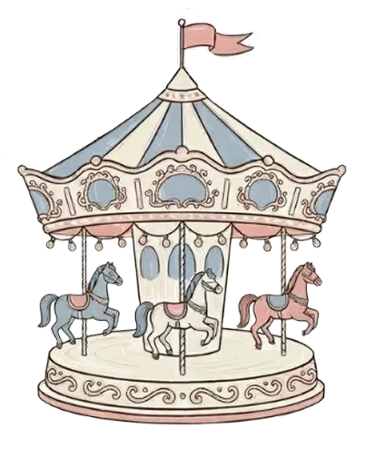

Тарифы



«Облако Счастья» — первый в городе парк, где главное блюдо — сладкая вата. Четыре зоны: оранжерейный «Карамельный вихрь», батутный «Прыжок в облако», водная «Сахарная река» и зеркальный «Ватный лабиринт». Главная фишка — 10 автоматов с безлимитной ватой из натуральных ингредиентов. Для родителей: парковка, комната матери и ребенка, видеотрансляция площадок на телефон и «Тихий час» с 13:00 до 14:00. Купкой билет онлайн за 3 дня — получи именной браслет в подарок. «Облако Счастья» — это место, где возвращаются в детство. Приходи за порцией счастья!